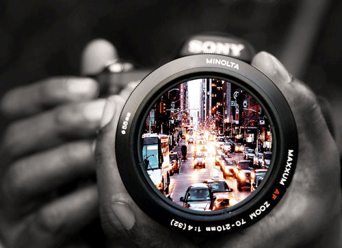

Останнім часом у мене з'явилася нова пристрасть – робити знімки, тобто фотографії. Виявилося, що особливих умінь і навичок для одержання зображень, як раніше, не потребується. Аби було бажання та фотоапарат.
Кажуть: краще раз побачити, ніж почути. А я вважаю, що ще краще – побачити і сфотографувати.